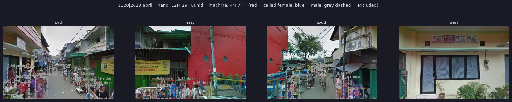
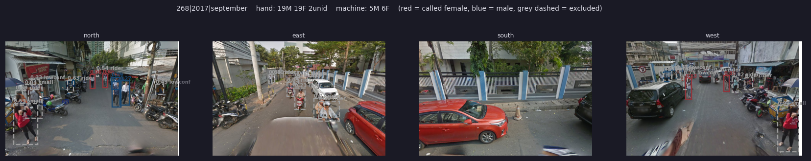
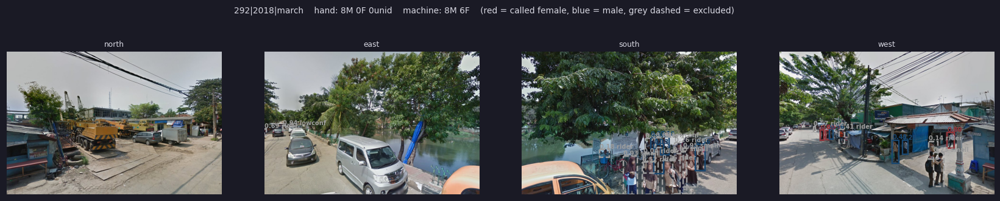

Ground truth
Validation
A pipeline that runs on 1.4 million images needs evidence about where it is right and where it isn't. This page covers the three checks against human labels: what each one tests, how it was built, and what it shows.
Two questions, kept separate
Validation asks two different things. Are the people it detects classified sensibly? That is about the classifiers and calibration. Does it find everyone who is there? That is about detection and the exclusion rules, and no amount of calibration can fix a person who was never detected.
Check 1 · classification
Calibration on audited crops
Fitted and cross-validated on a separate hand audit of detected crops. Multiclass Brier score falls from 0.460 to 0.278. See the Pipeline page.
Check 2 · street panoramas
10,216 hand-labelled panoramas
The pipeline re-run on the exact Street View panoramas an annotation firm labelled by hand, compared panorama by panorama.
Check 3 · park photos
A blind, weighted audit
343 photos of public parks, labelled box by box without seeing the machine output, then traced person by person through the pipeline.
Check 2 · street panoramas
Machine against hand labels, panorama by panorama
The study's headline levels come from a separate sample of 10,216 Street View panoramas at 2,963 locations, hand-labelled by the data-labelling firm Digital Data Divide. For every panorama, annotators counted the men, women and children visible in public space. Running the pipeline over the same panoramas gives a direct test of the whole system: scrape, detect, gate, classify.
Each panorama was downloaded as four cardinal views (900 × 600 px), about 31,000 images in all, and run through the production models unchanged. Only the input paths and an image-count assertion were added. The machine output was then matched back to the hand counts on location, year and month.
Getting the data right before comparing
Most of the work in a comparison like this is making sure both sides measure the same thing. Each of these checks caught something that would otherwise have shown up as a false finding.
Images
Blank frames that pass every checksum
The views were scraped rather than fetched from an API, so a missing panorama comes back as a valid image with no error. A transfer check proves the bytes arrived, not that they are a photograph. Screening by file size, then pixel variance, found 396 perfectly uniform blank frames arriving in complete sets of four. They were flagged and excluded before scoring, so they never counted as "the machine saw nobody here".
Matching
The right join key
Panorama IDs repeat: one panorama can serve two sampled locations, or the same location in two survey years. Joining on location + year + month instead is one-to-one, and every machine panorama joins to exactly one hand row.
Hand labels
Check every row, not just the totals
The survey's own identities (infants + children + adults = total; men + women + unidentified = adults) hold on every one of the 10,216 rows, not just in aggregate. Totals can hide offsetting errors.
Machine output
Verify the run before reading it
No duplicated scores, box indices complete in every image, every exclusion label recomputed independently from the raw columns with zero mismatches, and no runaway detections (at most 19 boxes per image).
Fair comparison
Two kinds of zero
A panorama the pipeline processed and found nobody in is a genuine miss, and stays in. A panorama with no imagery was never seen by the pipeline, and is left out. Dropping the first kind would quietly make the model look better.
Geometry
Same scene, different pixels
The hand-labelled views use a wider field of view than the production images, so people appear smaller: a median box of about 45 px against 75–78 px in production. Rescaling by the field-of-view ratio (tan 30° / tan 45°) brings it to about 77 px. Without this, the size filter would have discarded people for purely geometric reasons, and an artefact would have read as a finding.
What the comparison looks like
Each strip is one hand-labelled panorama, shown as its four views. Coloured boxes are people the pipeline kept (red = called female, blue = called male). Grey dashed boxes were excluded, labelled with the reason: rider, lowconf or small. The hand and machine counts for the whole panorama are in the title. Click a strip to open it full size.



Display uses hard labels for readability; the study's machine counts use calibrated probabilities.
What it shows so far
Detection tracks the hand counts. Across panoramas, the number of people the pipeline keeps after the rider gate correlates with the number the annotators counted at r ≈ 0.71. Calibrated probabilities agree slightly better than hard labels on both women (r 0.44 → 0.47) and men (0.55 → 0.60), and they recover more children.
Error grows with crowding. On empty or quiet streets the two counts agree closely; on busy ones they diverge, almost always with the machine low. The park-photo audit below finds the same pattern and shows why it matters for women.
Hypotheses ruled out. Several plausible explanations for machine–hand gaps were tested and rejected. Scores do not drift with box size: the gender split shows no trend across a 50× range of detection sizes. Cyclists, whom the annotators count but the pipeline sets aside, account for only about 0.3% of detections. Coverage gaps are flat across years, so the time comparison is not threatened by which years have imagery.
Check 3 · park photos
A blind, weighted audit of 343 photographs
The pipeline was also run on 2,436 usable visitor photographs of Jakarta's RPTRA child-friendly public spaces. These are large phone photos, not 640 px Street View tiles, so the run is also a test of the pipeline outside the imagery it was built for. Nothing was known about who was really in them, so a sample was hand-labelled to find out.
Sample design. All 2,436 photos were split into six strata by how the pipeline had behaved on them: no detections, every detection removed by the rider gate, organised events, posed photos, and ordinary park scenes with and without people. Sampling was deliberately heavier where the pipeline was expected to fail, and the stratum where every detection had been removed was labelled in full. Inverse-probability weights sum exactly to 2,436. As a check, the weighted sample reproduces the pipeline's own known total for all 2,436 photos to within 3.0%, which is what licenses extrapolating from the 343.
Annotation protocol
Every photo was labelled in CVAT by a single annotator, blind: no machine boxes were loaded, so the labels record what is in the photo rather than correcting what the machine found. With one annotator, consistency across weeks is the main safeguard, so every judgement call was settled once as a written rule and applied from then on.
Scope
Every discernible person
- No minimum size: distant background figures count, so zoom in.
- Labels: woman, man, child (about 12 or under), unknown.
- Age before gender: a child is labelled child even if gender is readable.
- An honest unknown beats a coin-flip call.
Not people
What never gets a box
- Murals, statues, mannequins, printed figures on banners.
- Reflections and people on screens inside the photo.
- A real person posing behind a painted cut-out board is boxed.
Attributes
Strict physical tests
- Occluded only if a person, object or the frame edge hides about a quarter of the body or more. Blur, fence bars and side-by-side overlap don't count.
- Riding only on or astride a visible bicycle, motorbike or scooter, or inside a vehicle. Play equipment is never riding.
The one exception was a dense crowd photo, where the re-label found 72 people against 32 the first time. The first pass undercounts the densest crowds, so the miss rates below are, if anything, a floor.
Where the misses happen
Hand boxes were matched to pipeline boxes by IoU, so every real person can be traced through the pipeline. Most losses happen at detection, not classification. The detector is an off-the-shelf model never fine-tuned on park imagery, and it struggles most in crowds: it counts 42.7% of people at organised events against 67.8% in ordinary park photos, and misses 64% of partly hidden people against 36% of fully visible ones.
Errors partly cancel. 21.5% of the pipeline's detections match no real person. Those false positives offset some of the misses, so adult totals can look close to the hand count while individual photos are badly off. Per-photo counts correlate at only r = 0.645. Aggregate agreement isn't person-level validation, which is why the share is always reported with the correlation and the false-positive rate.
Detection error isn't gender-neutral
Hand-labelled women were missed more often than men.
The gap isn't a size effect: women and men appear at almost identical sizes, and the gap persists within every size band. It is largely about crowds. Misses rise from about 12% in photos with 1–3 people to about 58% in photos with more than 20, and 59% of women in these photos are in such crowds against 35% of men. Within similar crowd sizes, most of the gap disappears. This is measurement error that comes from where women are, and the street-panorama comparison points the same way. The study treats it as a threat to its street-presence estimates.
Children are the weakest class. Children are 44.7% of the people in these photos. Hard-label outputs assign none at all, and summed calibrated probabilities recover only 7.2% of them. The classifiers were trained mostly on adult pedestrians in street imagery, and a park full of children is far from that domain.
Lessons from building the audits
Analysis
An empty image is data, not missing data
Starting a per-image analysis from the list of boxes silently drops photos with no hand-labelled people, and with them the pipeline's false positives inside those photos. Per-image analysis must start from the list of images.
Annotation
Never pre-select a value in a label schema
A posture attribute defaulted to "standing", so untouched boxes were indistinguishable from deliberate ones, and posture beyond riding/not-riding couldn't be used. Defaults should be an explicit "unset".
Matching
Check orientation before matching boxes
The annotation tool applies photo rotation metadata on upload, but the pipeline reads raw pixels. The matching script refuses to run if image dimensions come back transposed.
Records
Keep the rejected hypotheses
Both audits keep a decision log that records failed explanations and corrected mistakes alongside confirmed findings. A record that shows only the guesses that worked isn't evidence.